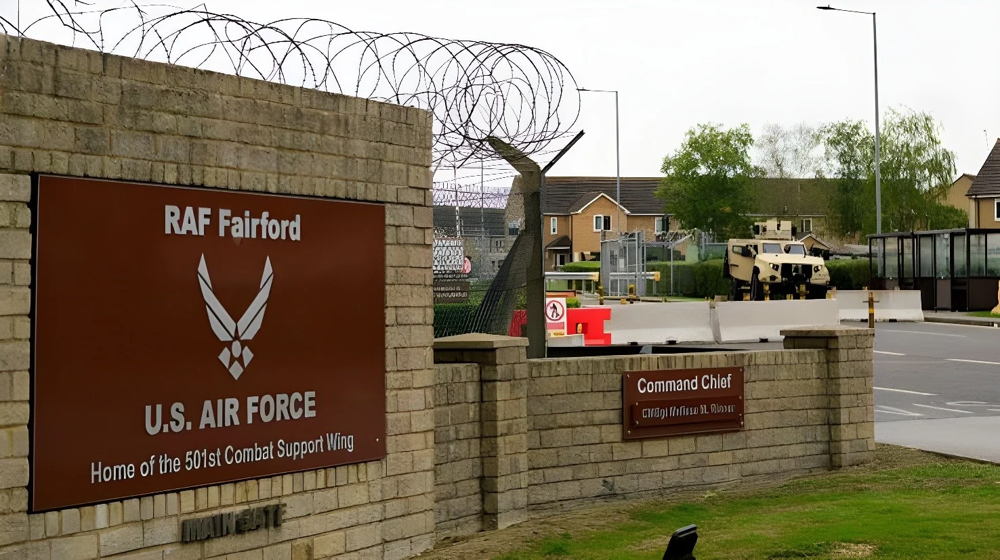

Dans la nuit du samedi 26 au dimanche 27 septembre 2026, cinq hommes ont été arrêtés près de RAF Fairford, dans le Gloucestershire, une base britannique utilisée par les bombardiers américains engagés contre l'Iran. D'abord interpellés pour des infractions à la loi sur les explosifs, ils sont désormais soupçonnés d'avoir préparé un acte terroriste. Des démineurs de l'armée sont intervenus et quelque 85 foyers ont été évacués.
Vers 0 h 45, heure locale, la police a été alertée de la présence de trois véhicules suspects qui se dirigeaient vers RAF Fairford, une base de la Royal Air Force située à environ 1 h 30 de Londres. Cinq hommes ont été interpellés dans le secteur de Whelford, un village voisin de la base, d'abord pour des infractions à l'Explosives Act, la loi britannique sur les explosifs. Ils ont ensuite été de nouveau arrêtés, cette fois pour préparation d'un acte terroriste. L'enquête est désormais menée par le Counter Terrorism Policing, le réseau national de police antiterroriste.
Un « incident majeur » a été déclaré. Des unités de déminage de l'armée se sont rendues sur place, tandis qu'environ 85 foyers étaient évacués par précaution. Des images tournées depuis un hélicoptère montrent un robot inspectant trois fourgonnettes blanches garées près de la base. Un habitant évacué raconte avoir vu apparaître pendant la nuit trois « fourgons inhabituels ». À ce stade, les suspects n'ont pas été identifiés et aucune piste n'a été communiquée sur un éventuel mobile.
Le Premier ministre Andy Burnham a remercié les services d'urgence ainsi que les habitants pour leur compréhension pendant les « vérifications de précaution ». Depuis les États-Unis, Donald Trump a affirmé que les suspects « cherchaient à causer de gros dégâts » et que les services les avaient « sous surveillance depuis longtemps », saluant une réponse « incroyable » de la police britannique. Ces propos n'ont pas été confirmés par les enquêteurs britanniques.
Malgré son nom, RAF Fairford est avant tout une base américaine : elle accueille le 501st Combat Support Wing de l'US Air Force et c'est la principale base européenne capable de recevoir les bombardiers lourds américains. Depuis le début de la guerre en Iran en février 2026, Londres a autorisé Washington à y mener des opérations qualifiées de « défensives » contre des sites de missiles iraniens : des B-52 et des B-1 s'y sont installés au printemps. Andy Burnham, arrivé à Downing Street cet été après la démission de Keir Starmer, a maintenu cet accord.
Les Gardiens de la révolution iraniens avaient averti que toute base utilisée contre l'Iran deviendrait une « cible légitime ». Le Royaume-Uni a déjà subi cet été une cyberattaque attribuée à des hackers liés à l'Iran contre une centrale électrique. Aucun lien n'a toutefois été établi entre ces menaces et les arrestations de Fairford.
Guerre d'Irak : des militants pacifistes, les « Fairford Five », s'introduisent dans la base et endommagent des véhicules destinés aux B-52. Deux d'entre eux seront acquittés en 2007.
Des militants de Palestine Action s'introduisent sur la base de RAF Brize Norton et aspergent de peinture deux avions militaires.
Palestine Action est interdit et classé comme organisation terroriste par le gouvernement britannique.
Début de la guerre en Iran ; Londres autorise des frappes américaines « défensives » depuis ses bases.
Arrivée de bombardiers B-52 et B-1 américains à RAF Fairford.
Cinq hommes arrêtés près de la base, soupçonnés de préparer un acte terroriste.
« Nous en sommes aux premiers stades de l'enquête, et cinq hommes restent en garde à vue. »
— Vicki Evans, coordinatrice nationale de la police antiterroriste britanniqueL'affaire rappelle que la « relation spéciale » entre Londres et Washington a un coût sécuritaire. En ouvrant ses bases aux bombardiers américains, le Royaume-Uni participe indirectement à la guerre contre l'Iran, tout en refusant de s'engager dans des opérations offensives. Cette position intermédiaire l'expose sur plusieurs fronts : aux représailles d'un État hostile, qu'elles soient militaires ou cyber, mais aussi à des militants qui voient dans ces bases le symbole d'une guerre qu'ils rejettent. Pour le gouvernement Burnham, le défi est double : protéger des installations devenues stratégiques pour son allié américain, et convaincre une opinion britannique souvent réticente que cette implication reste limitée et maîtrisée.
Overnight on Saturday 26 to Sunday 27 September 2026, five men were arrested near RAF Fairford in Gloucestershire, a British base used by US bombers involved in the war against Iran. First held on suspicion of offences under the Explosives Act, they are now suspected of preparing a terrorist act. Army bomb disposal teams were called in and around 85 households were evacuated.
At around 12:45 am local time, police received a call about three suspicious vehicles travelling towards RAF Fairford, a Royal Air Force base about 90 minutes from London. Five men were arrested in the Whelford area, a village next to the base, initially on suspicion of committing offences under the Explosives Act. They were then further arrested on suspicion of preparing a terrorist act. The investigation is now being led by Counter Terrorism Policing, the UK's national counter-terrorism network.
A "major incident" was declared. Army bomb disposal units were sent to the scene, while around 85 households were evacuated as a precaution. Helicopter footage showed a robot inspecting three white vans parked near the base. One evacuated resident said three "unusual vans" had appeared in the area overnight. The suspects have not been identified, and no information has been given about a possible motive.
Prime Minister Andy Burnham thanked the emergency services, and local residents for their understanding while "precautionary checks are carried out". In the United States, Donald Trump said the suspects were "looking to do big damage" and that "we had them under view for a long time", praising what he called an "amazing" response by British police. His claims have not been confirmed by British investigators.
Despite its name, RAF Fairford is essentially an American base: it is home to the US Air Force's 501st Combat Support Wing and is the main European base able to host heavy US bombers. Since the Iran war began in February 2026, London has allowed Washington to carry out what it calls "defensive" strikes on Iranian missile sites from the base, and B-52 and B-1 bombers moved in during the spring. Andy Burnham, who entered Downing Street this summer after Keir Starmer's resignation, has kept the arrangement in place.
Iran's Revolutionary Guards had warned that any base used against Iran would become a "legitimate target". Britain has already suffered a cyberattack this summer, blamed on Iran-linked hackers, against a power plant. No link has, however, been established between these threats and the Fairford arrests.
Iraq war: peace activists known as the "Fairford Five" break into the base and damage vehicles used to support B-52 bombers. Two of them are acquitted in 2007.
Palestine Action activists break into RAF Brize Norton and spray paint on two military aircraft.
The British government bans Palestine Action as a terrorist organisation.
The Iran war begins; London allows "defensive" US strikes from its bases.
US B-52 and B-1 bombers arrive at RAF Fairford.
Five men are arrested near the base on suspicion of preparing a terrorist act.
"We are in the early stages of an investigation, and five men remain in custody."
— Vicki Evans, UK national coordinator for Counter Terrorism PolicingThe case is a reminder that the "special relationship" between London and Washington comes at a security cost. By opening its bases to US bombers, Britain is indirectly involved in the war against Iran, while refusing to take part in offensive operations. This in-between position exposes it on several fronts: to retaliation from a hostile state, whether military or cyber, but also to activists who see these bases as symbols of a war they oppose. For the Burnham government, the challenge is twofold: protecting facilities that have become strategic for its American ally, and convincing an often reluctant British public that this involvement remains limited and under control.